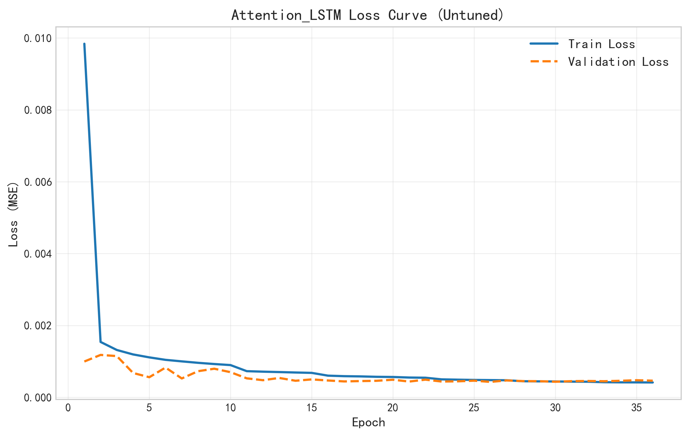
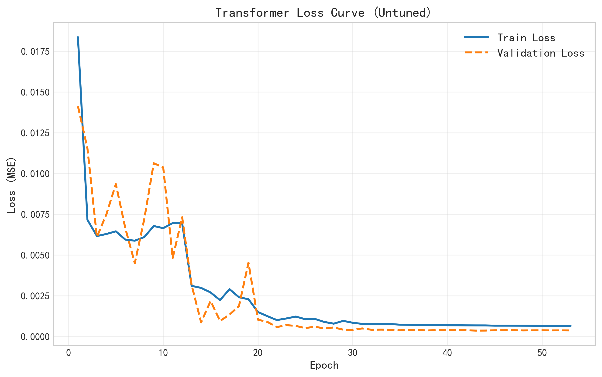
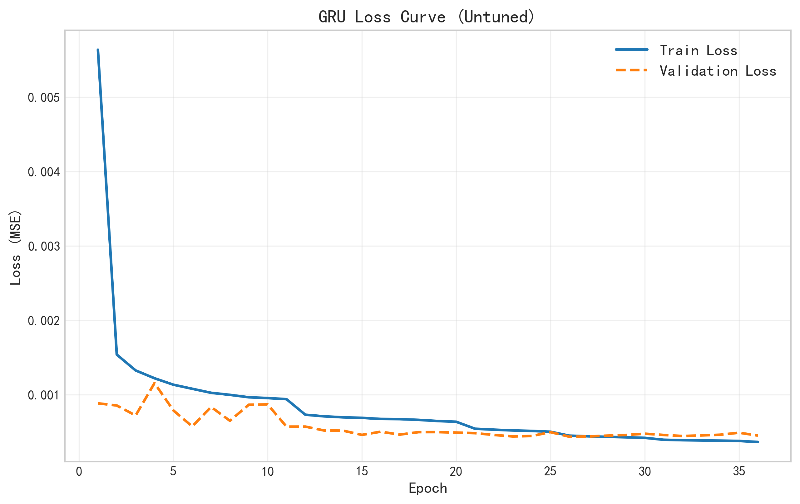

技术方案
融合流体力学先验知识的数据工程与特征构建
物理引导特征工程
显式引入 $SOG^3$ (立方航速) 和 $Wave^2$ (波浪增阻) 等流体力学先验特征，显著降低模型学习非线性物理规律的难度。
迭代式数据清洗
实施反馈驱动的清洗策略：通过维度修正 (Reshape) 解决序列结构问题，并应用 3σ 统计滤波 与 物理边界约束 剔除极端离群值，构建高质量数据集。
高性能训练策略
针对海量 AIS 数据，采用 磁盘内存映射 (Memory Mapping) 技术实现零拷贝加载，并集成 ReduceLROnPlateau 自适应调整学习率，有效解决 OOM 问题并加速收敛。
研究区域与 AIS 轨迹时空分布图
展示休斯顿航道 (Houston Ship Channel) 的内河与外海数据覆盖范围
模型训练
多层次模型对比与训练稳定性验证
传统基线模型
- 🔹 Ridge Regression: 线性基准，用于验证物理特征的相关性。
- 🔹 XGBoost: 树模型，作为捕捉非线性关系的强力基线。
深度时序模型
- 🚀 Attention-LSTM: 核心模型，结合LSTM与注意力机制。
- 🔹 Transformer: 自注意力机制对比基准。
- 🔹 Pure LSTM / GRU: 基础RNN模型。
深度学习模型损失收敛曲线 (Untuned)
对比各模型在未调优状态下的收敛速度与稳定性 (Epoch 1-50)

Attention-LSTM Model

Transformer Model

Pure LSTM Model

GRU Model
消融实验
验证物理引导特征的核心贡献
🔬 实验设计逻辑
为了验证“物理引导特征工程”的有效性，我们基于 Attention-LSTM 模型进行了特征消融测试。实验通过移除流体力学先验特征（$SOG^3$ 与 $Wave^2$），但保持模型架构与超参数不变，从而量化物理规律对预测精度的净贡献。
RMSE 误差对比
Full Model vs. w/o Physics

物理特征移除后的性能显著衰减
预测偏差时序图
Physics Deviation Plot

缺失物理特征导致高速区间的能耗削峰现象
核心代码实现
基于 TensorFlow 的物理引导深度学习框架实现
Feature Engineering
Data Cleaning
Attention-LSTM
Ablation Study
Training Strategy
Visualization
# File: src/preprocessor.py
# Context: Explicitly calculating fluid dynamics features (SOG^3, Wave^2)
# to linearize the learning problem.
def generate_features(df):
# ... (Basic feature engineering) ...
# 4. Physics-Guided Features
# Explicitly introduce cubic speed and squared wave height
# based on ship resistance equations (R ~ v^3)
df['SOG_Cubed'] = df['SOG'] ** 3
df['Wave_Squared'] = df['WaveHeight'] ** 2
# ... (Temporal features) ...
return df
# File: src/preprocessor.py
# Context: Using statistical methods (3-sigma) and feature clipping
# to handle extreme outliers in AIS data.
def filter_outliers(X, y, quantile_range=(0.005, 0.995)):
# 1. Filter based on y (Energy Consumption)
y_lower = np.quantile(y, quantile_range[0])
y_upper = np.quantile(y, quantile_range[1])
y_mask = (y >= y_lower) & (y <= y_upper) # 2. Filter based on X features (remove samples
with any extreme feature)
# ... (Loop through features) ...
return X[final_mask], y[final_mask]
def clip_features(X, clip_range=5.0):
# Clip features to +/- 5.0 std devs to prevent gradient explosion
return np.clip(X, -clip_range, clip_range)
# File: src/models/attention_lstm.py
# Context: The core deep learning model that uses attention
# to focus on critical time steps (acceleration, turning).
class TemporalAttention(layers.Layer):
def call(self, x):
# x shape: (Batch, Time, Features)
# Score = tanh(Wx + b)
e = tf.keras.backend.tanh(tf.keras.backend.dot(x, self.W)
+ self.b)
# Calculate attention weights (alpha)
alpha = tf.keras.backend.softmax(tf.squeeze(e, axis=-1))
alpha = tf.expand_dims(alpha, axis=-1)
# Weighted sum to get context vector
context = x * alpha
context = tf.keras.backend.sum(context, axis=1)
return context, alpha
def build_attention_lstm(input_shape):
inputs = layers.Input(shape=input_shape)
# Stacked LSTM layers
x = layers.LSTM(DL_HIDDEN_UNITS, return_sequences=True)(inputs)
x = layers.LSTM(DL_HIDDEN_UNITS, return_sequences=True)(x)
# Attention Mechanism
context, alpha = TemporalAttention()(x)
outputs = layers.Dense(1)(context)
return models.Model(inputs=inputs, outputs=outputs)
# File: ablation_study/step2_train_model.py
# Context: Verifying the contribution of physics features by selectively
# removing them while keeping the model structure identical.
# Experiment Configuration: Ablation Study
# Compare "Full Physics" vs "No Physics"
experiments = {
'With_Physics': {
'features': ['SOG', 'SOG_Cubed', 'WaveHeight', 'Wave_Squared', ...],
'description': 'Full model with physics-guided terms'
},
'No_Physics': {
'features': ['SOG', 'WaveHeight', ...], # Removed SOG^3 and Wave^2
'description': 'Baseline model relying only on raw data'
}
}
for exp_name, config in experiments.items():
print(f"Running Ablation: {exp_name}")
# Train model with specific feature subset...
# Result: 'No_Physics' model shows higher RMSE in high-speed zones
# File: main_step2_experiment_gpu.py
# Context: Handling large-scale data with memory mapping and adaptive learning
rates.
class FastBatchGenerator(tf.keras.utils.Sequence):
def __init__(self, X_path, y_path, batch_size):
# Memory Mapping: Zero-copy data loading from disk
self.X = np.memmap(X_path, dtype='float32', mode='r', shape=x_shape)
self.y = np.memmap(y_path, dtype='float32', mode='r', shape=y_shape)
# Callbacks for stable training
callbacks = [
EarlyStopping(monitor='val_loss', patience=5, restore_best_weights=True),
ReduceLROnPlateau(monitor='val_loss', factor=0.2, patience=2)
]
# File: main_step3_plot.py
# Context: Visualizing the learned attention weights to confirm
# the model learns physical logic.
def plot_attention_heatmap(model, X_sample):
# Extract attention weights from the trained model
_, attention_weights = model.predict(X_sample)
# Plot heatmap: Time Steps vs. Attention Intensity
sns.heatmap(attention_weights.T, cmap='viridis')
plt.title("Temporal Attention Weights")
plt.xlabel("Time Step (Past -> Future)")
# High weights coincide with rapid acceleration events
项目总结
基于物理引导与数据驱动融合的研究成果
✅ 核心成果
- 🔹 Untuned R² > 0.999：验证了物理引导特征 ($SOG^3$) 对非线性映射的极强线性化能力，极大降低了模型训练难度。
- 🔹 可解释性验证：Attention 机制成功捕捉加速与转向等关键能耗事件，特征重要性分析（XGBoost vs Ridge）验证了物理一致性。
- 🔹 低成本代理模型：成功构建了无需昂贵传感器、仅依赖公开 AIS 与气象数据的区域级高精度能耗估算方案。
🚀 未来展望
- 🔹 泛化能力测试：计划将模型推广至全球其他繁忙港口（如上海港、鹿特丹港）进行跨域验证。
- 🔹 实时系统部署：将训练好的轻量化模型封装为 API 服务，接入实时 AIS 数据流进行在线预测。
- 🔹 多物理场融合：引入洋流 (Ocean Currents) 和船体污底 (Hull Fouling) 因子，进一步提升在极端海况下的预测精度。